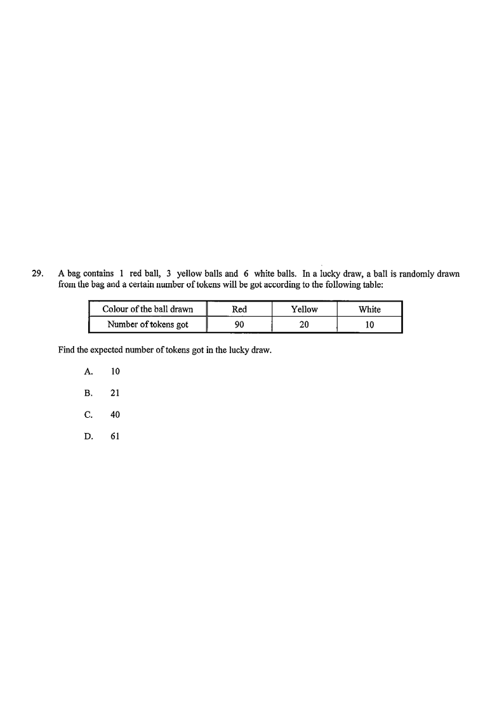

Step 1 — The bag has 1 red, 3 yellow and 6 white balls (10 balls in total).
A bag contains 1 red ball, 3 yellow balls and 6 white balls. In a lucky draw, a ball is randomly drawn from the bag and a certain number of tokens will be got according to the following table:
| Colour of the ball drawn | Red | Yellow | White |
|---|---|---|---|
| Number of tokens got | 90 | 20 | 10 |
Find the expected number of tokens got in the lucky draw.
A. 10 B. 21 C. 40 D. 61

Total number of balls $= 1 + 3 + 6 = 10$.
$$P(\text{red})=\frac{1}{10},\quad P(\text{yellow})=\frac{3}{10},\quad P(\text{white})=\frac{6}{10}$$
Hint: the denominator is always the TOTAL number of balls,
not just one colour.
Red → 90 tokens, Yellow → 20 tokens, White → 10 tokens.
Hint: this table gives the "value" $x$ for each outcome of the random variable.
$$E(X)=\sum x\cdot P(x)$$
$$E(X)=90\times\frac{1}{10}+20\times\frac{3}{10}+10\times\frac{6}{10}$$
Hint: multiply each token value by its own probability,
then add the three products.
$$E(X)=9+6+6=21$$
Hint: a quick sanity check — the answer must lie between 10 and 90.
Question. A bag contains \(2\) red balls, \(3\) yellow balls and \(5\) white balls. A ball is drawn at random, and the number of tokens won is \(80\) for red, \(30\) for yellow and \(10\) for white. Find the expected number of tokens won.
A. \(10\) B. \(20\) C. \(30\) D. \(40\) (1 mark)